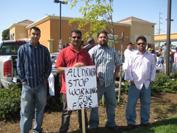
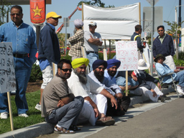
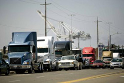

Submitted on Mon, 05/26/2008 - 1:23pm
 By David Rovics - May 25th, 2008
By David Rovics - May 25th, 2008
I wouldn't want to elevate anybody to inappropriately high heights, but for me, Utah Phillips was a legend.
I
first became familiar with the Utah Phillips phenomenon in the late
80's, when I was in my early twenties, working part-time as a prep cook
at Morningtown in Seattle. I had recently read Howard Zinn's A People's History of the United States,
and had been particularly enthralled by the early 20th Century section,
the stories of the Industrial Workers of the World. So it was with
great interest that I first discovered a greasy cassette there in the
kitchen by the stereo, Utah Phillips Sings the Songs and Tells the Stories of the Industrial Workers of the World.
As
a young radical, I had heard lots about the 1960's. There were (and
are) plenty of veterans of the struggles of the 60's alive and well
today. But the wildly tumultuous era of the first two decades of the
20th century is now (and pretty well was then) a thing entirely of
history, with no one living anymore to tell the stories. And while long
after the 60's there will be millions of hours of audio and video
recorded for posterity, of the massive turn-of-the-century movement of
the industrial working class there will be virtually none of that.
Submitted on Tue, 05/20/2008 - 4:09am

By: J. Pierce with Adam Welch
Independent truckers in California's San Joaquin Valley shut down their rigs on Friday, May 2nd declaring an open-ended strike. At $4.80 a gallon, sky-rocketing diesel prices top the list of grievances. As their main demand, drivers insist on doubling the rates paid for hauling a container. The second biggest demand is a fuel surcharge of upwards of 55%. The brokers currently pay surcharges varying from 30-40%. If drivers can keep the trucking bosses from stealing it, the increased surcharge would help place the burden back on those who can afford it.
"We're fighting for survival." That's how Gerardo Cordoba explains the struggle. He's been driving for 10 years and raises a seven year-old on what he brings home after costs. The rates haven't seen an increase in a decade and most truckers bring home less than $30,000 year. In fact, when asked how much an average driver earns, Dewey Obtinalla, a Filipino driver who regularly does long haul up the coast, replied, "If you're making $30,000, that's good, very good... With fuel, insurance, and registration, I don't know a lot of people who are doing that well." Brave strikers don't need to look far
for others willing to fight.
Submitted on Sat, 05/10/2008 - 2:39pm
In March 2008 the Grand Rapids GMB of the IWW and the Grand Rapids Starbucks Workers Union announced the beginning of a 'Spring Offensive against Starbucks (SOS)' to increase local pressure on the coffee giant on the eve of the fourth anniversary of the Starbucks Union founding, and in support of the new Unfair Labor Practice charges filed against Starbucks in Grand Rapids. Wobblies described S.O.S. as a 'multi-pronged' offensive where union members: would increase engagement with costumers about Starbucks' union-busting and 'fair tade' policies, increase contact with local baristas about the demands of the SWU as well as invitations to social gatherings, and an increase in publicity and community exposure.
IWW baristas honored MayDay 2008 with a press conference and celebration. At 4:00pm GMB members Jackie Wood and Chuck Neller posted in front of the Starbucks store in East Grand Rapids, with the branch banner, in preparation of the press conference. Union baristas then addressed the media with statements expressing solidarity with others struggling on the job, and announced a renewed commitment to fight Starbucks repression.
Submitted on Thu, 05/08/2008 - 4:33am
Once again a step ahead of intermodal truckers across the US, Stockton truckers, led by the majority Sikh drivers, launched a strike over the issue of fuel prices on Monday, May 5, 2008.
While many truckers participated in various protest shutdowns on either April 1st or May 1st this year, the 300-400 Stockton truckers working out of the Union Pacific and Burlington Northern-Santa Fe railyards have shut down their industry until their demands have been met.
Rather than demand the fuel surcharges paid by shippers but often pocketed by companies rather than passed along to drivers, the Stockton truckers are asking for a dramatic increase in the rates paid in order to keep up with increases costs such as fuel.
On April 26, 2004 Stockton intermodal truckers, inspired by rumors circulating of an LA port trucker shutdown, were the first to join what became a strike of west cost port truckers on April 30, and by June had spread to most southern and eastern ports as well.
Submitted on Thu, 05/08/2008 - 4:13am

By Reed Fujii - San Joaquin Record Staff Writer, May 06, 2008
For the second time in four years, hundreds of independent truck drivers
went on strike Monday against companies that hire them to haul cargo containers
out of railroad terminals near Stockton.
And again, as in 2004, the issue was the failure of freight rates to keep
up with rapidly rising fuel prices.
Ajit Gill of Stockton, a truck owner-operator and a spokesman for strikers,
said the truckers face fuel costs that have more than doubled since 2004, as
well as higher costs for insurance, stiffer inspection fees and more. But
freight rates have not kept pace.
"There is nothing raised," he said Monday by cell phone.
The drivers would prefer to keep working, if it was practical.
"Unfortunately, we have to stop," Gill said. "Nobody can afford $4.35
diesel."